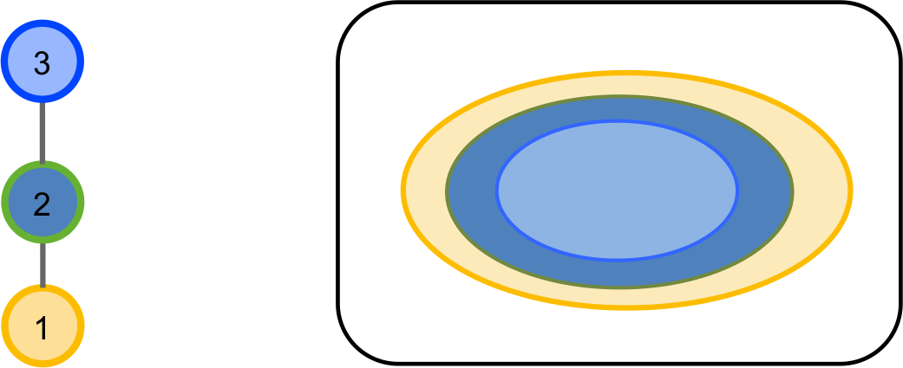

Metapopulation dynamics A predator requires a prey to colonize a patch A predator requires a prey to persist in a patch
 Holt, R.D. (1996). Food webs in space: an island biogeographic perspective. In: Food Webs: Contemporary Perspectives, Polis & Winemiller.
First trophic level : $\frac{dp_1}{dt} = c_1p_1(1-p_1) - e_1p_1$ Which yields : $p_1^* = 1 - e_1/c_1$
Second trophic level : $\frac{dp_2}{dt} = c_2p_2(p_1-p_2) - e_2p_2$ Which yields : $p_2^* = p_1 - e_2/c_2$
Assumptions : A species can only invade an island if it as at least one prey present on the island A species that loses its last prey on the island goes extinct $\frac{dp_g}{dt} = c(1-p_g)q_g - (e + \epsilon_g)p_g$ Where : \(q_g\) : probability that a species has a prey present on the island \(\epsilon_g\): rate a predator loses its last prey on the island
Finer aspects of network structure : Massol et al. 2017. Advances in Ecological Research Addition of allometric constraints : Jacquet et al. 2017. Ecology Letters Other types of interactions : Cazelles et al. 2015. Ecography Co-occurrence and network structure : Cazelles et al. 2016. Theoretical Ecology Metacommunity dimensions : Gravel & Massol. 2019 in Theoretical Ecology.
We want to couple bicknell's thrush with forest dynamics The best would be to have a colonization/extinction model for birds Make colonization conditional on forest type Run the two models simultaneously We would obtain something like : $p_{bicknell}^* = p_{conifers} - e_{bicknell}c_{bicknell}$
Without dynamical data for birds We will derive \(p_{bicknell}^*\) directly from the data with a SDM Couple models sequentially : Evaluate the SDM Run the forest simulation model Predict with the SDM the expected bird distribution using future climate & future forest composition as predictors Repeat the whole procedure for all bird species